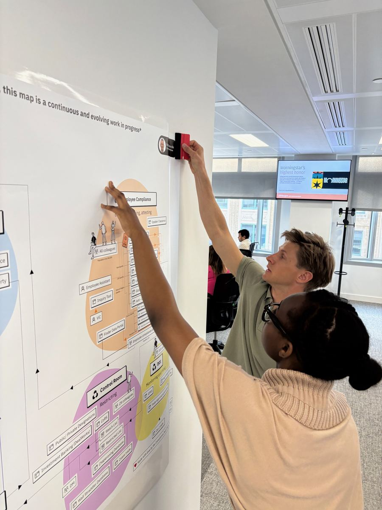
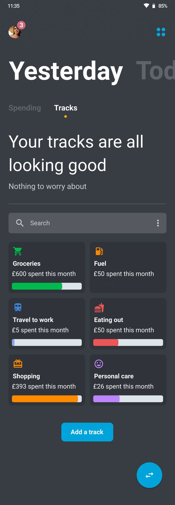
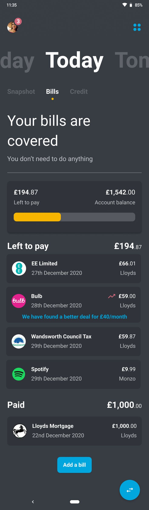
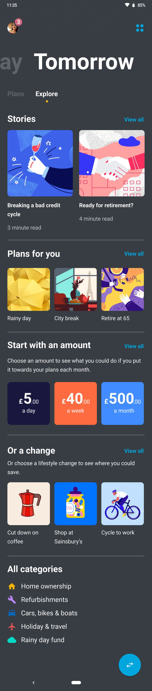
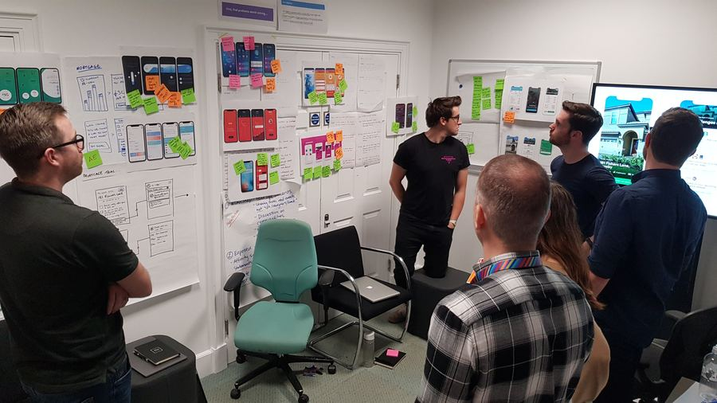

I'm a hands-on design leader who has worked in every area of design, from messy problem discovery through to working with engineers to QA work in production. My happy place is being hands-on with teams, rapidly discovering and bringing new ideas to life, then building teams that can embody that culture and run with it. I've selected three recent examples that best bring this to life.
012024 — Present
JPMorgan Chase
Design Director · London
JPMorgan hired me to lead design for compliance technology — the tools risk and control teams rely on every day inside one of the world's largest banks. I built the team from 7 to 21, and it's now the most respected and imitated team within the corporate side of the firm.
Given the nature of the work I can't share screens, but key projects include:
A desktop application that aggregates previously disparate tasks and data needed by compliance colleagues, including an LLM-based search of complex documentation to enable quick decision-making. My role: designing the MVP and instilling a user-centric way of working.
A chat-based overhaul of cross-firm self-certification journeys used by over 300,000 colleagues, moving from complex screens to a plain-language conversation. My role: facilitating the design process and setting the content design principles.
A machine-learning platform replacing two external surveillance vendors, enabling firm-wide monitoring of a range of financial and comms activity. A multi-year programme. My role: understanding user needs, scoping and designing the MVP, and building the design team to take it from concept to delivery.

Mapping the compliance journey
I've been using the Lab section of this site to explore ideas indicative of concepts I've designed within JPMC.
022021 — 2024
4G Capital
Chief Product Officer · London & Nairobi
4G Capital is Africa's leading neobank and a certified B Corp, serving customers and small businesses across Kenya and Uganda that mainstream banks overlook. When I joined, there was no dedicated product design function, and the technology stack was holding the business back.
I built a product design team from scratch and tackled the design of the colleague and customer service as one, leveraging an idea I developed at Lloyds Banking Group. The existing customer service ran on a simple shortcode (a popular East-African SMS-based technology) journey, which formed the backbone of how I scoped and designed the Android app. My role was to use service design to map the existing process, tech stack and customer/colleague journey, then design the IA, content strategy, and key screens and journeys for both customer and colleague services.
In five years I grew a service design capability from 0 to 34 designers, then became design director for retail, shaping a wider team of 100 and setting the vision for what great looked like across every surface. I finished by product designing a new digital service end to end, then ran a 'run-ahead' team using emerging tech to solve problems customers hadn't been able to name yet.

Tracks — spending by category

Bills — all in one place

Explore — plans for the future

Workshop — designing the mortgage journey
I was across a number of projects, including:
The mobile cheque deposit journey, still in use in the Lloyds Bank app today. My role: service design.
The consumer app design team that delivered a 14-point NPS increase. My role: design leadership and mentoring.
Designing a future-facing version of the B2C service. My role: design leadership, IA, content design and screen design.
I'm also proud of the work I pioneered to assess and grow skills within the design team.
This video does a nice job of linking my illustration degree to my work at Lloyds: